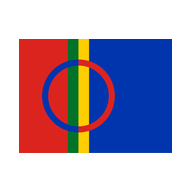

Ladataan sanakirjaa…
Ensimmäisellä kerralla ladataan noin 47 Mt. Sen jälkeen sanakirja toimii myös ilman verkkoyhteyttä.
Bures boahtin!
Viimeksi haetut
Kokeile:

Ensimmäisellä kerralla ladataan noin 47 Mt. Sen jälkeen sanakirja toimii myös ilman verkkoyhteyttä.
Viimeksi haetut
Kokeile:
Saameksi (likimääräinen, tarkista sanat)